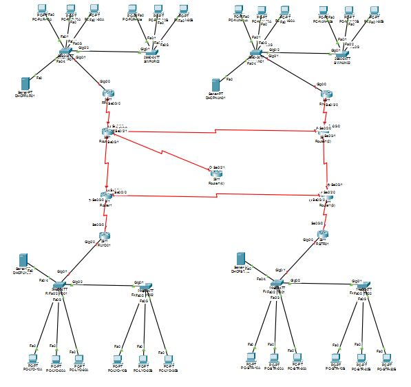
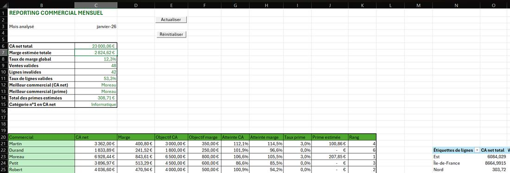
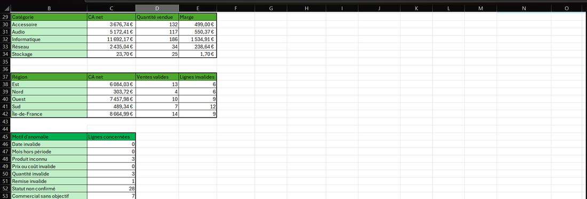
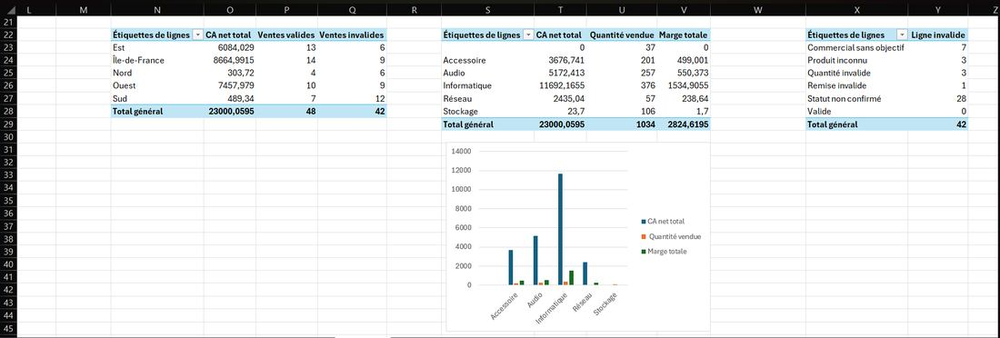
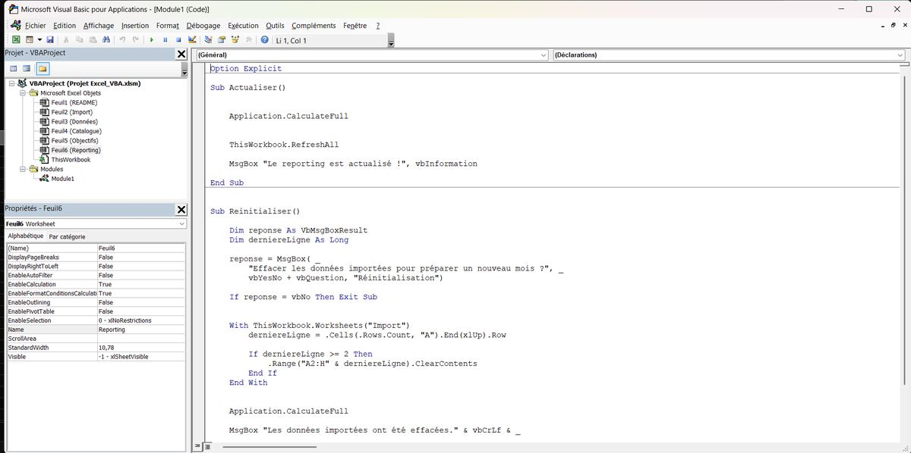
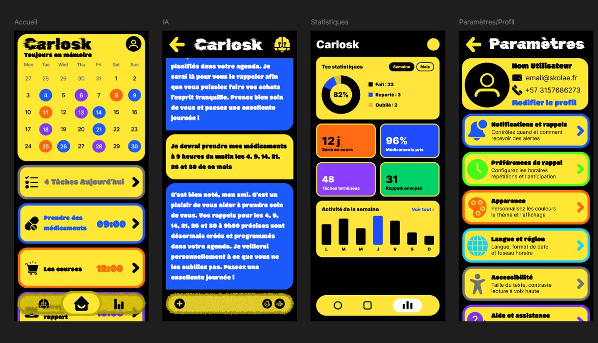

Mélissa Gomes
Étudiante en informatique et cybersécurité · Recherche d’une alternance
À propos
Après des études de traduction en anglais et en espagnol, je me suis réorientée vers l’informatique et la cybersécurité. J’ai suivi la formation Numérik Pro Tech chez Colombbus (avril – juillet 2026), puis complété mes bases par plusieurs certifications en Linux, réseaux, SQL, sécurité web et gestion des risques SI.
J’ai rejoint l’ESGI en septembre 2026. À plus long terme, je souhaite devenir analyste SOC.
Compétences
- Support et maintenance
- Composants d’un PC, diagnostic matériel et logiciel, GLPI, Windows, Linux
- Systèmes et réseaux
- Linux (terminal, Bash), TCP/IP, VLAN, DHCP, routage RIP, Cisco Packet Tracer
- Cybersécurité
- OWASP Top 10, test d’intrusion web, analyse des risques SI, Azure Security
- Développement web et données
- HTML5, CSS3, PHP, Bootstrap, SQL, MySQL, VBA Excel
- Langues
- Français, anglais, portugais (courant) · espagnol (intermédiaire)
Certifications
Initiez-vous à Linux
OpenClassrooms
Introduction à la cybersécurité
Cisco Networking Academy
Réalisez un test d’intrusion web
OpenClassrooms
OWASP Top 10
OWASP
Concevez votre réseau TCP/IP
OpenClassrooms
Analysez et gérez des risques SI
OpenClassrooms
Découvrez les bases de la sécurité numérique
OpenClassrooms
Requêtez une base de données avec SQL
OpenClassrooms
Créez votre site web avec HTML5 et CSS3
OpenClassrooms
AZ-900 — Azure Fundamentals
Microsoft
SC-900 — Security, Compliance & Identity Fundamentals
Microsoft
Parcours
Bachelor, ESGI
Systèmes et réseaux, développement, bases de données
Formation Numérik Pro Tech, Colombbus
Informatique, développement web, réseaux, maintenance, cybersécurité
Traductrice freelance, Fiverr
Traduction anglais → français pour des particuliers
Licence en Langues Étrangères Appliquées, Sorbonne Nouvelle
Projets
Réseau multi-sites sous Cisco Packet Tracer
Projet de groupe : 4 sites reliés en WAN. Chaque site dispose d’un routeur, de deux switchs, d’un serveur DHCP et de six postes. Routage RIP, VLAN (dont un créé en direct lors de la soutenance) et tests de connectivité avec ping.

Outil de reporting commercial Excel / VBA
Import de données de ventes, contrôle de leur qualité (lignes invalides, motifs d’anomalie) et tableau de bord mensuel : chiffre d’affaires, marge, objectifs, primes estimées, classement des commerciaux, tableaux croisés dynamiques par catégorie et par région. Deux boutons pilotent l’outil : « Actualiser » et « Réinitialiser » (avec confirmation).




Application mobile « Carlosk » (maquette Figma)
Application de rappels pour ne pas oublier ses affaires, conçue à partir d’une recherche utilisateur. Maquette de 4 écrans : accueil (calendrier et tâches du jour), assistant IA, statistiques et paramètres.

Autres projets
Site web « Au feu de bois »
Site de recettes de 6 pages en PHP, Bootstrap 5 et CSS, avec menu responsive et carrousels. Projet ESGI.
Doctor Who
Site HTML / CSS réalisé pendant la formation.
The Sound Of Music
Page web HTML / CSS autour d’un film. Code
Hachis-Parmentier
Page de recette : structure HTML et mise en forme CSS.
Facebookosaure
Création de pages et d’interfaces web.
Contact
Une opportunité d’alternance ou une question sur mon parcours ?
melissagomes96@hotmail.fr
06 21 68 74 99
github.com/MelissaGomes22